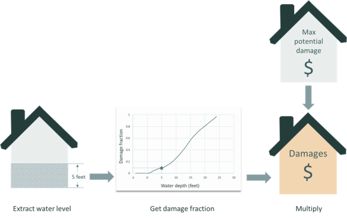

User guide
Quick start
FIAT computes the (economic) damage and risk of flood events at a specified geographic location based on flood inundation data, exposured assets and vulnerability functions. The model can be configured with a settings file and data inputs:
The HydroMT plugin HydroMT-FIAT can be used to set up the FIAT model but that is not compulsory. If a user sets up their own FIAT model, it is recommended to save the data into the same folder structure that HydroMT-FIAT creates.
The models
The data is used by either one or both of the following models:
- GeomModel
- GridModel
Some more information about the models can be found here.
General User Information
FIAT derives damages and risk at asset-level based on flood maps and additional inputs such as depth-damage functions, asset locations and their maximum potential damages. For each asset specified in the exposure dataset, the water depth or level is sampled from the flood map at the location of the assets.
Water elevations are converted to water depths using the ground elevation of each asset.
See Figure 1 for an overview of the FIAT workflow. To obtain the flood inundation level, FIAT extracts the water depth or level at the location of each asset. For line or polygon assets, either the average or maximum water depth or level and the fraction of the asset are extracted from the hazard map. The inundation depth within buildings or on top of for example, roads, is obtained by subtracting the ground floor height from the water depth. FIAT derives the damage fraction for each asset using its inundation depth and interpolating over its depth-damage curve. Thereafter, the damage to the asset is calculated as the product of the maximum potential damage and the damage fraction. In case an asset is only partially flooded, the damages will be reduced by the dry fraction of the building. Instead of single events, the user can also provide return-period flood maps as input. Hence, FIAT calculates and integrates the associated return-period damages to derive the expected annual damages.
